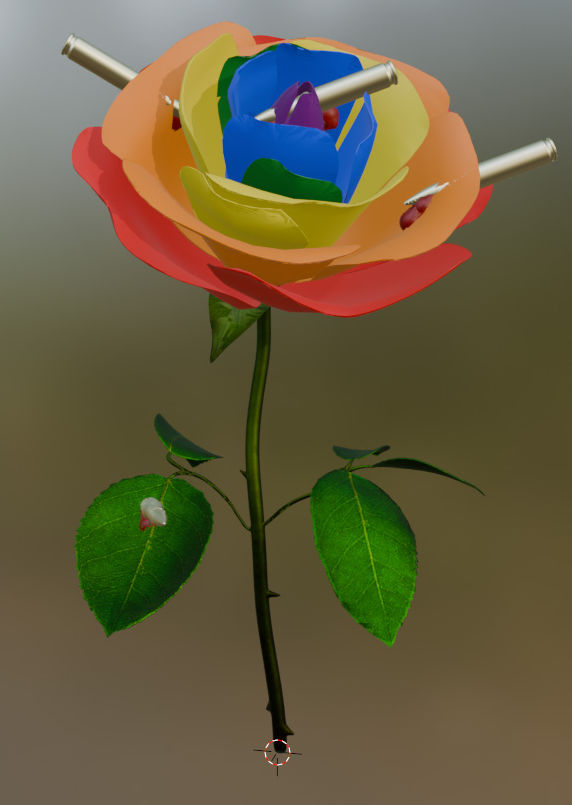
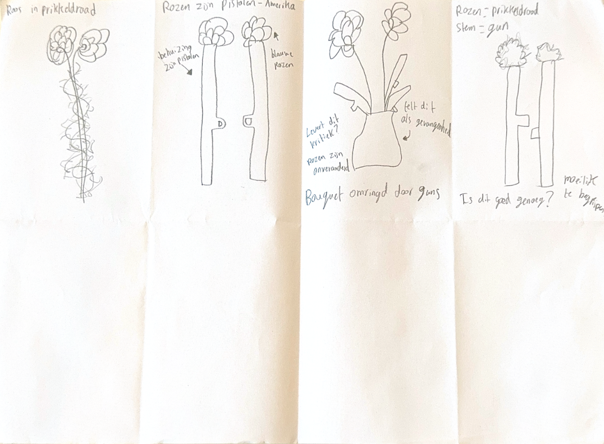
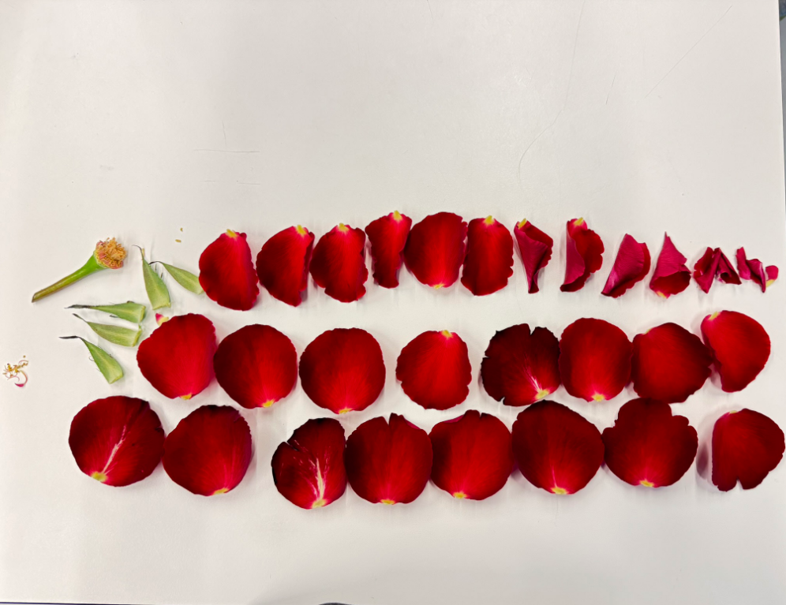

Het Provocatieve Object
Op de CMD studie heb ik tijdens Discursive Design een object, in dit geval een roos, een nieuwe betekenis gegeven. Ik wilde de oppressie van de LHBTI+ gemeenschap in Amerika uitbeelden en een nieuwe vorm geven. Hierbij heb ik gebruikt gemaakt van mijn inlevingsvermogen en creativiteit. Ook heb ik hiervoor mijn beetje kennis over Blender gebruikt om de roos (een free model) aan te passen aan mijn verhaal. Dit staat dicht bij mij als ontwerper, omdat ik een verhaal wil maken, maar ook omdat de LHBTI+ gemeenschap ook dicht bij mij staat als persoon.

De objectmutatie van mijn gekozen object, het beeld de oppressie van de LHBTI+ gemeenschap.

Foto van verschillende mogelijkheden (concepten/brainstorming).

Knolling foto van het object en de onderdelen.